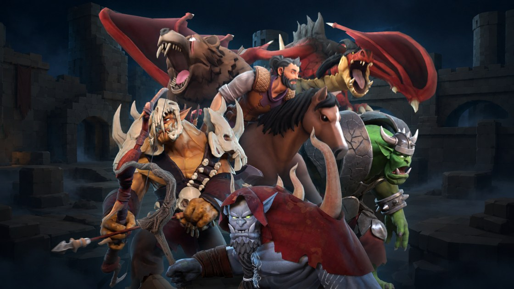

Orc、Dragon 到 Boss：把 Rig、Skin、Locomotion 與 Combat Animation 做成可重用遊戲系統
Yeyo Studio 分享動作外包實務：跨人類、orc、ogre、skeleton、necromancer 與 15 種 creature，每角色約 42 個 locomotion/combat state，並在 engine 中持續驗證 rig、skin 與動畫集合。

動畫 ★★★★★
完整分析
動畫系統流程
案例的難點不是單一漂亮 shot，而是讓 locomotion、attack、reaction、jump、roll、stun、death 等約 42 個 state 在大量不同 anatomy／裝備角色上形成一致系統。Yeyo 同時處理 rigging、skinning、creature motion 與 engine testing，顯示動畫資產從一開始就以 gameplay set 而非單 clip 管理。
製作價值
對遊戲團隊最可轉移的是可重用動畫集合＋角色差異層思維：先定義共通狀態與命名，再針對比例、武器、體型與 boss 特性做變體。這能讓 outsourcing 驗收從主觀動作好不好看，升級成 state completeness、contact、root、retarget 與 engine behavior 的系統化檢查。
導入測試
可以挑人類、重型獸人與四足 creature 各一隻，先定 10 個核心 state 做 mini set，測重定向可重用率、需要專屬重做的比例、foot slide、weapon contact 與 blend transition。若共用骨架／命名無法降低總工時，就表示抽象層設計太弱或角色差異已超出適用範圍。